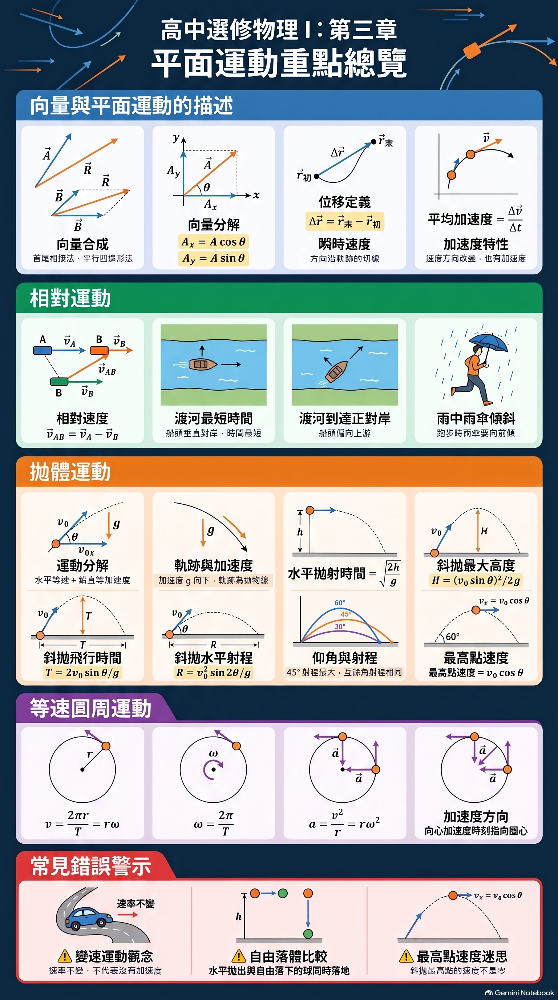

3-1
平面運動的描述
- 向量合成用首尾相接或平行四邊形；分解：Aₓ = A cos θ、Ay = A sin θ（本章 sin 37° = 0.6、cos 37° = 0.8）
- 平均加速度 = Δv⃗ / Δt；速率不變但方向改變，仍然有加速度
4資訊圖表重點
點一下放大全圖
2互動視覺化：向量合成與速度變化
1NotebookLM 簡報
3隨堂評量
3-2
相對運動
- A 相對於 B 的速度 v⃗AB = v⃗A − v⃗B；也可寫成 v⃗A = v⃗AB + v⃗B
- 渡河時間只由垂直河岸的速度分量決定；船頭垂直對岸時間最短，偏向上游才能到正對岸
4資訊圖表重點
點一下放大全圖
2互動視覺化：渡河與雨傘
1NotebookLM 簡報
3隨堂評量
3-3
拋體運動
- 拋體運動 = 水平等速（vₓ = v₀ cos θ）＋ 鉛直等加速度（a = g 向下）；軌跡是拋物線
- 斜拋 H = (v₀ sin θ)² / 2g、T = 2v₀ sin θ / g、R = v₀² sin 2θ / g；45° 最遠、互餘角射程相同
4資訊圖表重點
點一下放大全圖
2互動視覺化：拋體發射台
仰角 0° 時，旁邊會有一顆同時自由落下的灰球，兩球一定同時落地。按「保留軌跡」再換角度，可以比較 37°、45°、53° 的射程。37°、53° 依課本取 sin 37° = 0.6、cos 37° = 0.8。
1NotebookLM 簡報
3隨堂評量
3-4
等速圓周運動
- v = 2πr / T = rω，ω = 2π / T = 2πf；速度方向沿切線，時時刻刻在改變
- 向心加速度 a = v² / r = rω²，永遠指向圓心，只改變方向、不改變速率
4資訊圖表重點
點一下放大全圖
2互動視覺化：等速圓周運動
按「放手！」，物體會沿著當時的切線方向直直飛出去（就像甩繩子的橡皮塞），說明速度一直沿切線。動畫太快時會自動放慢，數值仍以實際週期計算。
1NotebookLM 簡報
3隨堂評量
★
總複習
- 本章重點總整理、形成性評量 10 題（附答案）、完整資訊圖表與教學影片
1NotebookLM 簡報：總整理與形成性評量
▶NotebookLM 教學影片
4完整資訊圖表

點一下放大